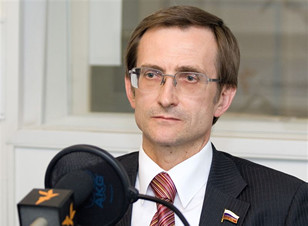
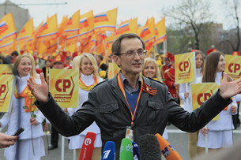

Считаю, инициатива правильная, назревшая, запрет на продажу слабоалкогольных тонизирующих напитков или, как их обычно называют – алкогольных энергетиков вводить необходимо, и делать это надо к снижению масштабов злоупотребления алкогольной продукцией и профилактике алкоголизмак можно скорее, сть этой дряни для здоровья населения, а особенно молодежи очевидна для всякого не ангажированного человека.
Опасность этой дряни для здоровья населения, а особенно молодежи очевидна для всякого не ангажированного человека. Напомню, что еще в 2009 году нашим Правительством была утверждена Концепция реализации государственной политики по снижению масштабов злоупотребления алкогольной продукцией и профилактике алкоголизма среди населения. В ней черным по белому сказано: “Слабоалкогольные напитки производятся с вкусовыми и тонизирующими добавками, присущими традиционным безалкогольным прохладительным напиткам, и выпускаются в красочной упаковке, зачастую содержащей привлекательные для молодежи наименования и символику. Сведения о наличии в таких напитках содержания этилового спирта зачастую представлены не явно, что создает у потребителя ложное представление о них как о безалкогольных напитках. Кроме того, сочетание этилового спирта и тонизирующих веществ (в частности, кофеина) в составе слабоалкогольных напитков ускоряет пристрастие населения, особенно молодежи, к алкогольной продукции. Потребление такой алкогольной продукции приводит к физиологической потребности ежедневного ее потребления”.
Два года назад я внес в Госдуму законопроект, запрещающий производство и оборот слабоалкогольных энергетических (тонизирующих) напитков содержащих этиловый спирт. Комитет по экономической политике дал заключение: “Законопроект не согласуется с нормами технического регламента Таможенного союза”. Мол, Россия не может в одностороннем порядке ввести запрет на.

Производство алкоэнергетиков, это будет противоречить принципам Таможенного союза. Хорошо, пусть так, я вношу другой законопроект, который устанавливает запрет только на розничную продажу слабоалкогольных тонизирующих напитков. На эту инициативу теперь уже